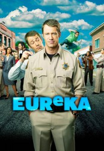

")
Alternativ: Eureka gesehen am 06.09.2017
gesehen am 06.09.2017
 
 IMDB-Wertung: 7.9 / 10
IMDB-Wertung: 7.9 / 10  Metascore:
Metascore: 
Die idyllische Kleinstadt Eureka an der Westküste der USA verbirgt ein mysteriöses Geheimnis: Die amerikanische Regierung hat als Geheimprojekt nach dem Zweiten Weltkrieg dort seit Jahren ihre brillantesten Wissenschaftler und deren Familien angesiedelt. Kein Wunder, dass sich Innovationen und totales Chaos hier die Hand geben. Als US-Marshall Jack Carter nach einer Autopanne in Eureka strandet, merkt er schnell, dass hier nicht alles so ist, wie es auf den ersten Blick scheint.
Jahr: 2006
Dauer: 84 Minuten
FSK: 12
Land: USA Studio: Sci-Fi Channel, TheTonspuren: DTS - ,
Untertitel: Deutsch,
Auflösung: 720p (1280x720) Größe: 3799 MB
Genre: Drama, Sci-Fi, Komödie, Abenteuer, Liebe, TV-Serie
Regisseur: Mike Rohl, Michael Robison, Matthew Hastings, Michael Lange, Colin Ferguson, Joe Morton, Michael Grossman, Jefery Levy, Jeff Woolnough, Eric Laneuville, Chris Fisher, Alexandra La Roche, Salli Richardson-Whitfield, Colin Bucksey, Marita Grabiak, Peter O'Fallon, David Straiton, Donna Deitch, Robert Lieberman,  Tim Matheson, Michael Nankin, Matt Earl Beesley, Ernest R. Dickerson, Fred Gerber, Paul Holahan, Oz Scott, Bryan Spicer, Sarah Pia Anderson, Matthew Diamond, James Head,
Tim Matheson, Michael Nankin, Matt Earl Beesley, Ernest R. Dickerson, Fred Gerber, Paul Holahan, Oz Scott, Bryan Spicer, Sarah Pia Anderson, Matthew Diamond, James Head,  Steve Miner, Stephen Surjik, Andrew Seklir, Jaime Paglia
Steve Miner, Stephen Surjik, Andrew Seklir, Jaime Paglia
Drehbuch: Frühstyxradio
Soundtrack:
Darsteller:
 Erica Cerra als Jo Lupo
Erica Cerra als Jo Lupo Joe Morton als Henry Deacon
Joe Morton als Henry Deacon Chris Gauthier als Vincent
Chris Gauthier als Vincent Matt Frewer als Jim Taggart
Matt Frewer als Jim Taggart Jaime Ray Newman als Tess Fontana
Jaime Ray Newman als Tess Fontana Wil Wheaton als Isaac Parrish
Wil Wheaton als Isaac Parrish James Callis als Dr. Trevor Grant
James Callis als Dr. Trevor Grant Frances Fisher als Eva Thorne
Frances Fisher als Eva Thorne Ever Carradine als Lexi Carter
Ever Carradine als Lexi Carter Barclay Hope als Gen. Mansfield
Barclay Hope als Gen. Mansfield Ming-Na Wen als U.S. Senator Michaela Wen
Ming-Na Wen als U.S. Senator Michaela Wen Tamlyn Tomita als Kim Anderson
Tamlyn Tomita als Kim Anderson Roger Cross als Major William Shaw
Roger Cross als Major William Shaw Sonja Bennett als Callie Curie
Sonja Bennett als Callie Curie Wallace Shawn als Dr. Warren Hughes
Wallace Shawn als Dr. Warren Hughes Olivia d'Abo als Dr. Abby Carter
Olivia d'Abo als Dr. Abby Carter Chris Parnell als Dr. Noah Drummer
Chris Parnell als Dr. Noah Drummer Ty Olsson als Deputy Andy
Ty Olsson als Deputy Andy Noah Danby als Major Ryan
Noah Danby als Major Ryan Garwin Sanford als Congressman Faraday
Garwin Sanford als Congressman Faraday Robert Clarke als Larry the IT Guy
Robert Clarke als Larry the IT Guy Rob LaBelle als Walter Perkins
Rob LaBelle als Walter Perkins Gabrielle Rose als Carol Taylor
Gabrielle Rose als Carol Taylor Alex Ferris als Boy
Alex Ferris als BoyDatei: X:\HD-Serien\Eureka\S01\Eureka S01E01E02.mkv seit 07.08.2017
Festplatte: HD Serien(A-H)
 Es gibt insgesamt 182 Filme in der Gruppe 'HD-Serien'
Es gibt insgesamt 182 Filme in der Gruppe 'HD-Serien'